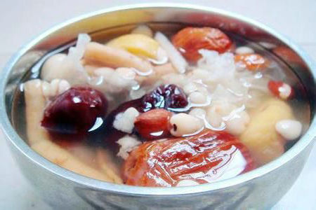
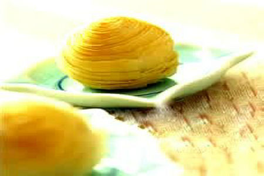
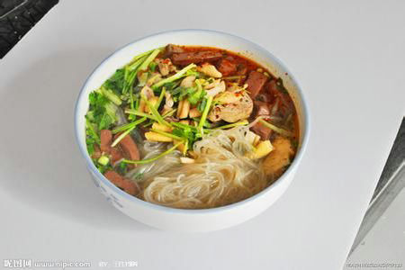
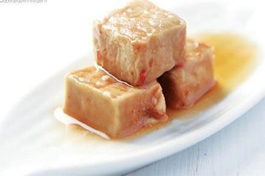
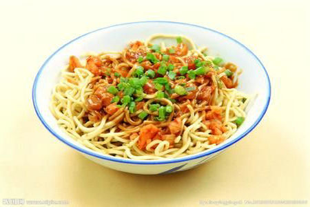
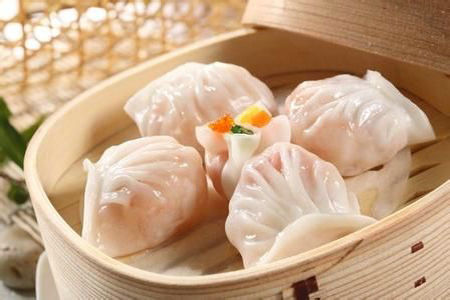

海南：海南清补凉
海南清补凉作为风靡热带海南岛的特色冰爽甜品，传统的海南清补凉主要是以红豆、花生粉等做成，加入冰块后成为一碗海南清补凉。
我的做法

山东：油炸螺丝糕
油炸螺丝糕是济南的一种传统精美的汉族糕类小吃，皮脆内嫩，葱香浓郁。传说这种螺丝糕是一百多年前由三位徐氏兄弟从南京传来。
我的做法

江苏：鸭血粉丝
鸭血粉丝是南京著名的风味小吃，由鸭血、鸭肠、鸭肝等加入鸭汤和粉丝制成。口感鲜香，爽口宜人。鸭肉蛋白质含量高，脂肪含量低，特别适合老年人食用。
我的做法

浙江：绍兴腐乳
绍兴腐乳是浙江地区汉族名菜，当地人叫“霉豆腐”，又有“素扎肉”的雅称。绍兴腐乳是价廉物美的佐餐佳品，红方的汁烧肉，肉味香冽，是绍兴传统的家乡名菜。
我的做法

湖北：热干面
热干面是湖北省武汉市的汉族特色小吃，原本是武汉的特色美食，在湖北很多地方都十分受欢迎。随着湖北人在其他省市地人口增多，武汉热干面也在许多地方都能见到，是诸多人喜欢的面食之一。
我的做法

广东：虾饺
虾饺是广东省的汉族传统小吃，属粤菜系，起源于广州郊外靠近河涌集市的茶居。那些地方盛产鱼虾，茶居师傅再配上猪肉、竹笋，制成肉馅。当时虾饺的外皮选用粘(大)米粉，皮质较厚，但由于鲜虾味美，很快流传开来。
我的做法
